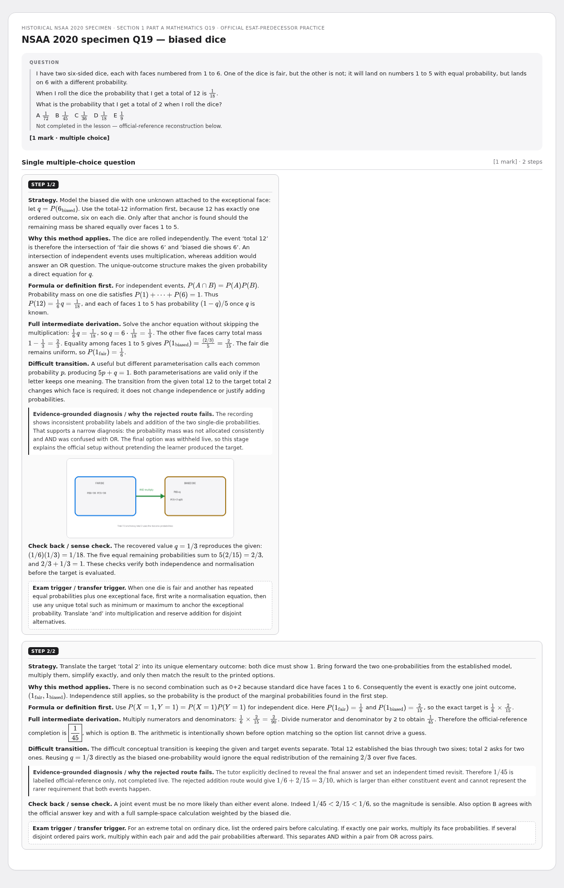
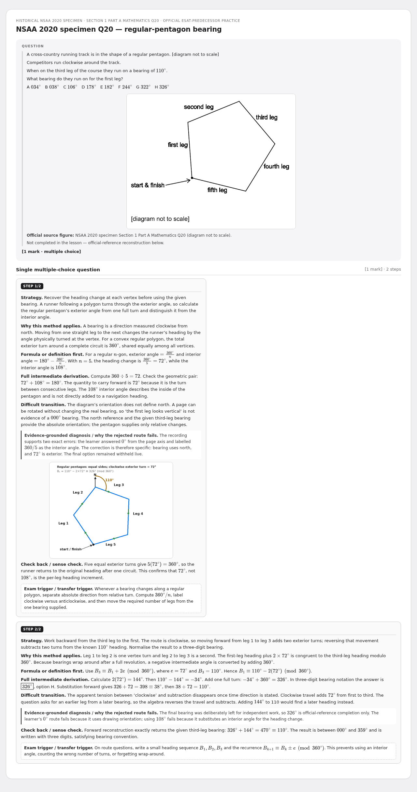
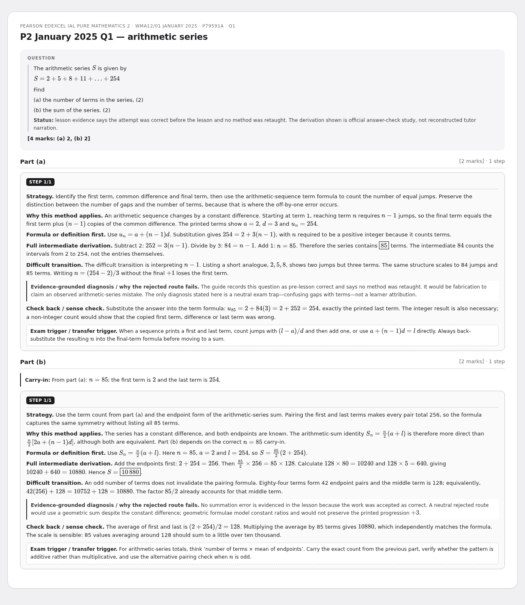
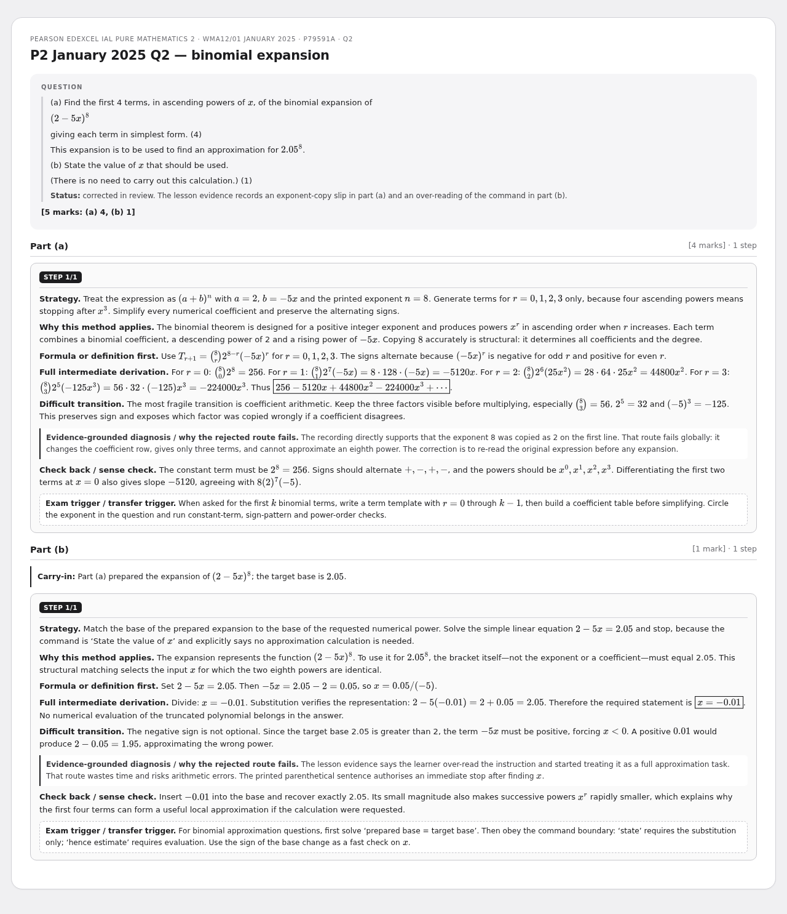
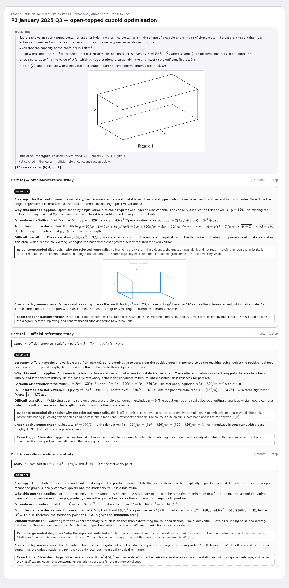
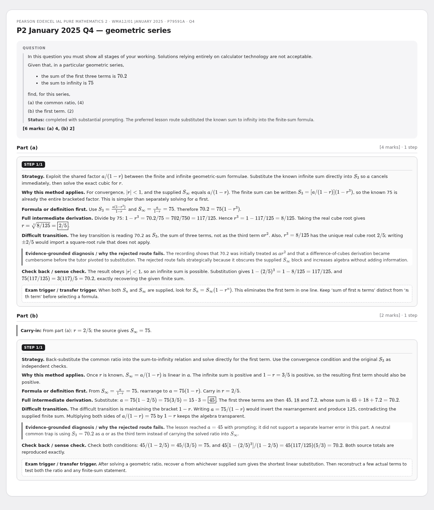
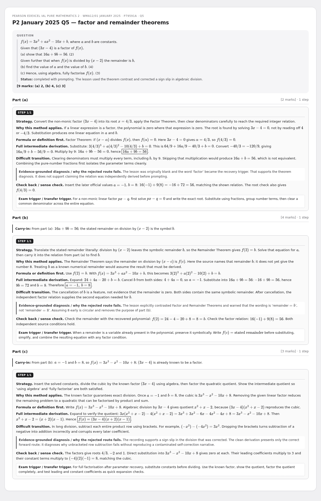
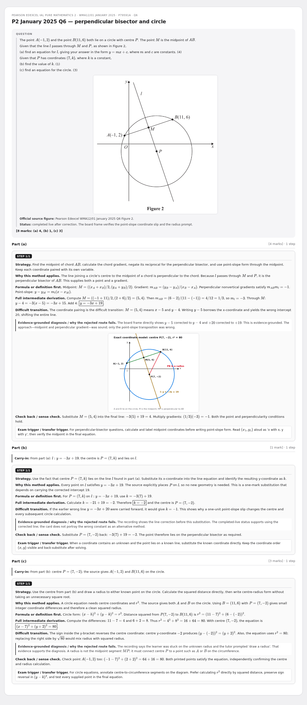
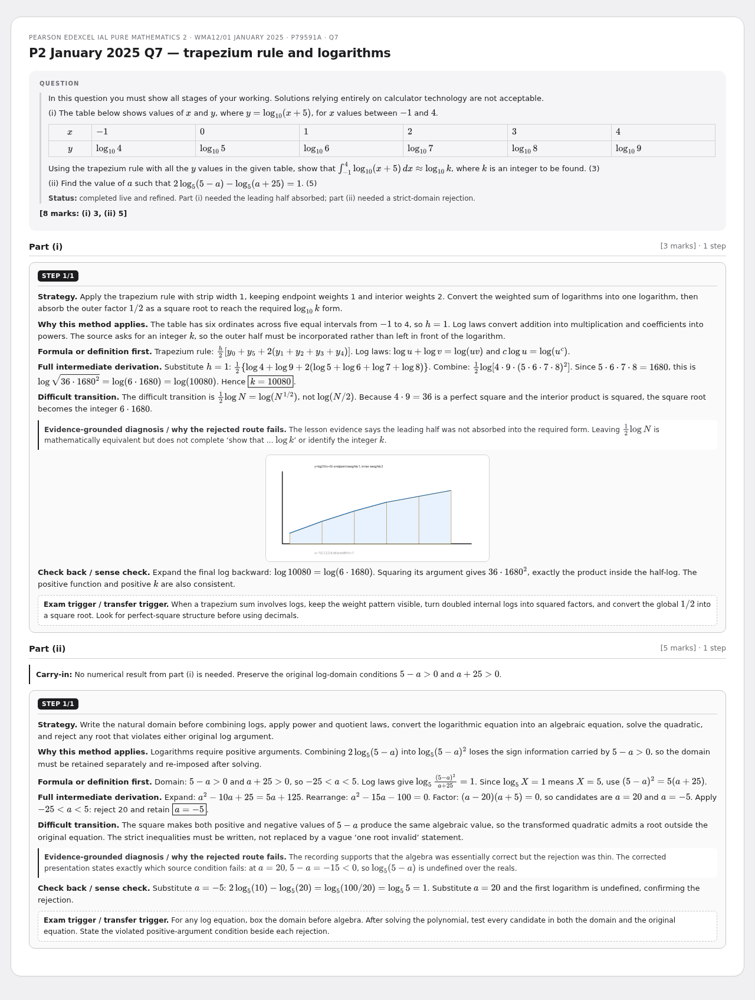
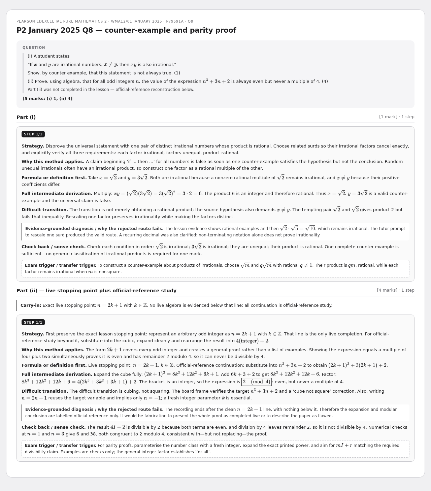

← All rebuilt lessons30 June - ESAT + P2 January 2025 (WMA12/01)
Rebuilt multi-step cards - review preview. Not part of the live deck.
10 cardsWMA12/01Jan 2025P2NSAA
NSAA 2020 specimen Q19 — biased dice
Historical NSAA 2020 specimen · Section 1 Part A Mathematics Q19 · official ESAT-predecessor practice

NSAA 2020 specimen Q20 — regular-pentagon bearing
Historical NSAA 2020 specimen · Section 1 Part A Mathematics Q20 · official ESAT-predecessor practice

P2 January 2025 Q1 — arithmetic series
Pearson Edexcel IAL Pure Mathematics 2 · WMA12/01 January 2025 · P79591A · Q1

P2 January 2025 Q2 — binomial expansion
Pearson Edexcel IAL Pure Mathematics 2 · WMA12/01 January 2025 · P79591A · Q2

P2 January 2025 Q3 — open-topped cuboid optimisation
Pearson Edexcel IAL Pure Mathematics 2 · WMA12/01 January 2025 · P79591A · Q3

P2 January 2025 Q4 — geometric series
Pearson Edexcel IAL Pure Mathematics 2 · WMA12/01 January 2025 · P79591A · Q4

P2 January 2025 Q5 — factor and remainder theorems
Pearson Edexcel IAL Pure Mathematics 2 · WMA12/01 January 2025 · P79591A · Q5

P2 January 2025 Q6 — perpendicular bisector and circle
Pearson Edexcel IAL Pure Mathematics 2 · WMA12/01 January 2025 · P79591A · Q6

P2 January 2025 Q7 — trapezium rule and logarithms
Pearson Edexcel IAL Pure Mathematics 2 · WMA12/01 January 2025 · P79591A · Q7

P2 January 2025 Q8 — counter-example and parity proof
Pearson Edexcel IAL Pure Mathematics 2 · WMA12/01 January 2025 · P79591A · Q8
